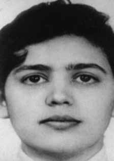

Maria
Regina
Lobo
Leite
de Figueiredo
CIRCUNSTÂNCIAS DA MORTE
Maria Regina morreu no dia 29 de março de 1972 no episódio conhecido como Chacina de Quintino, operação policial realizada em uma casa que funcionava como aparelho da VAR-Palmares, em Quintino, no Rio de Janeiro. A ação foi organizada por agentes do Destacamento de Operações de Informações (DOI) do I Exército, contando com o apoio do Departamento de Ordem Política e Social do Estado da Guanabara (DOPS/GB) e da Polícia Militar (PM).
Depois de cercarem o local, os agentes entraram na residência e atiraram contra os que estavam dentro da casa. Junto com Maria Regina, foram mortos outros dois integrantes da VAR-Palmares: Antônio Marcos Pinto de Oliveira e Lígia Maria Salgado Nóbrega. James Allen Luz, militante da mesma organização, encontrava-se no local mas conseguiu escapar do cerco.
A versão oficial dos fatos divulgada à época pelos órgãos do Estado sustentava que Maria Regina teria morrido por disparo de arma de fogo ao reagir à ação dos agentes dos órgãos de segurança. Contudo, as investigações indicam que Maria Regina morreu depois de ter sido ferida por disparos durante a invasão do aparelho da VAR-Palmares em Quintino.
Em entrevistas realizadas pela Comissão Estadual da Verdade do Rio de Janeiro (CEV-RJ), os moradores de Quintino, que eram vizinhos da residência à época dos fatos, relataram que a polícia já se encontrava no bairro desde o final da tarde do dia 29 de março, preparando a operação que ocorreria à noite. Os moradores ainda afirmaram que os barulhos dos disparos não vieram de dentro da casa onde os militantes se encontravam, mas do lado de fora da casa, de onde partiu a ação dos agentes do Estado.
Mais recentemente, manifestação apresentada pela equipe de perícia da Comissão Nacional da Verdade (CNV), baseada em documentos produzidos na ocasião dos fatos por órgãos do Estado, apontou que não havia nenhum vestígio de pólvora nos corpos das vítimas nem armas no local, o que permite inferir que não houve troca de tiros por parte dos militantes, tratando-se de uma ação unilateral dos agentes da repressão com o objetivo de executar os militantes. Os familiares de Maria Regina suspeitavam que depois de ter sido atingida pelos tiros, ela teria sido retirada do local da chacina com vida, levada a um órgão da repressão e possivelmente torturada. Entretanto, as pesquisas da CNV verificaram que a hipótese não se confirma.
Segundo parecer da equipe de perícia da CNV, Maria Regina, bem como as demais vítimas da Chacina de Quintino, morreu ainda no interior da residência onde ocorreram os disparos. Além disso, Hélio da Silva, ex-militante da VAR-Palmares que foi levado por agentes do DOI-CODI até o aparelho para a identificação dos corpos, afirmou em seu depoimento à CEV-RJ que na ocasião encontrou os corpos de três vítimas no interior da casa, sendo um homem e duas mulheres.
O corpo de Maria Regina deu entrada no Instituto Médico-Legal (IML) como desconhecido no dia 30 de março, mas a família só tomou conhecimento da morte no dia 5 de abril. Os restos mortais de Maria Regina Lobo Leite foram enterrados no cemitério São João Batista, no Rio de Janeiro.
Maria Regina died on March 29, 1972 in the episode known as the Quintino Massacre, a police operation carried out in a house that served as a VAR-Palmares apparatus, in Quintino, Rio de Janeiro. The action was organized by agents from the Information Operations Detachment (DOI) of the 1st Army, with the support of the Department of Political and Social Order of the State of Guanabara (DOPS/GB) and the Military Police (PM).
After surrounding the place, the agents entered the residence and shot those inside the house. Along with Maria Regina, two other members of VAR-Palmares were killed: Antônio Marcos Pinto de Oliveira and Lígia Maria Salgado Nóbrega. James Allen Luz, a member of the same organization, was there but managed to escape the siege.
The official version of the events released at the time by State agencies maintained that Maria Regina died from a gunshot while reacting to the actions of security agents. However, investigations indicate that Maria Regina died after being injured by gunfire during the invasion of the VAR-Palmares apparatus in Quintino.
In interviews carried out by the Rio de Janeiro State Truth Commission (CEV-RJ), the residents of Quintino, who were neighbors of the residence at the time of the events, reported that the police had already been in the neighborhood since the late afternoon of March 29, preparing the operation that would take place at night. Residents also stated that the noise of the shots did not come from inside the house where the militants were, but from outside the house, where the action of the State agents started.
More recently, a statement presented by the expert team of the National Truth Commission (CNV), based on documents produced at the time of the events by State bodies, pointed out that there was no trace of gunpowder on the bodies of the victims nor weapons at the scene, which allows us to infer that there was no exchange of fire by the militants, in the case of a unilateral action by repression agents with the aim of executing the militants. Maria Regina's family suspected that after being shot at, she had been removed from the scene of the massacre alive, taken to a repression agency and possibly tortured. However, CNV research found that the hypothesis is not confirmed.
According to the opinion of the CNV forensic team, Maria Regina, as well as the other victims of the Quintino Massacre, died inside the residence where the shots occurred. Furthermore, Hélio da Silva, a former VAR-Palmares activist who was taken by DOI-CODI agents to the device to identify the bodies, stated in his statement to CEV-RJ that at the time he found the bodies of three victims inside the house, one man and two women.
Maria Regina's body was admitted to the Medical-Legal Institute (IML) as unknown on March 30th, but the family only learned of her death on April 5th. The mortal remains of Maria Regina Lobo Leite were buried in the São João Batista cemetery, in Rio de Janeiro.
María Regina murió el 29 de marzo de 1972 en el episodio conocido como Masacre de Quintino, un operativo policial realizado en una casa que servía como aparato del VAR-Palmares, en Quintino, Río de Janeiro. La acción fue organizada por agentes del Destacamento de Operaciones de Información (DOI) del 1.º Ejército, con el apoyo del Departamento de Orden Político y Social del Estado de Guanabara (DOPS/GB) y la Policía Militar (PM).
Luego de rodear el lugar, los agentes ingresaron a la residencia y dispararon contra quienes se encontraban dentro de la vivienda. Junto a María Regina fueron asesinados otros dos integrantes del VAR-Palmares: Antônio Marcos Pinto de Oliveira y Lígia Maria Salgado Nóbrega. James Allen Luz, miembro de la misma organización, se encontraba allí pero logró escapar del asedio.
La versión oficial de los hechos difundida en su momento por organismos del Estado sostenía que María Regina murió por un disparo de arma de fuego mientras reaccionaba ante el accionar de agentes de seguridad. Sin embargo, las investigaciones indican que María Regina murió tras ser herida de bala durante la invasión al aparato del VAR-Palmares en Quintino.
En entrevistas realizadas por la Comisión de la Verdad del Estado de Río de Janeiro (CEV-RJ), los vecinos de Quintino, vecinos de la residencia en el momento de los hechos, informaron que la policía ya se encontraba en el barrio desde la tarde del 29 de marzo, preparando el operativo que se desarrollaría en la noche. Los vecinos también manifestaron que el ruido de los disparos no provino del interior de la casa donde se encontraban los militantes, sino del exterior de la casa, donde comenzó la acción de los agentes estatales.
Más recientemente, un comunicado presentado por el equipo de expertos de la Comisión Nacional de la Verdad (CNV), basado en documentos producidos en el momento de los hechos por organismos estatales, señaló que no había rastros de pólvora en los cuerpos de las víctimas ni armas en el lugar, lo que permite inferir que no hubo intercambio de disparos por parte de los militantes, tratándose de una acción unilateral de los agentes de represión con el objetivo de ejecutar a los militantes. La familia de María Regina sospechaba que, tras recibir disparos, la habían sacado viva del lugar de la masacre, llevada a una agencia de represión y posiblemente torturada. Sin embargo, una investigación de la CNV constató que la hipótesis no está confirmada.
Según el dictamen del equipo forense de la CNV, María Regina, así como las demás víctimas de la Masacre de Quintino, murieron en el interior de la residencia donde ocurrieron los disparos. Además, Hélio da Silva, ex militante del VAR-Palmares que fue llevado por agentes del DOI-CODI al dispositivo para identificar los cadáveres, afirmó en su declaración a la CEV-RJ que en ese momento encontró los cuerpos de tres víctimas dentro de la casa, un hombre y dos mujeres.
El cuerpo de María Regina fue ingresado al Instituto Médico Legal (IML) como desconocido el 30 de marzo, pero la familia recién se enteró de su muerte el 5 de abril. Los restos mortales de María Regina Lobo Leite fueron enterrados en el cementerio de São João Batista, en Río de Janeiro.